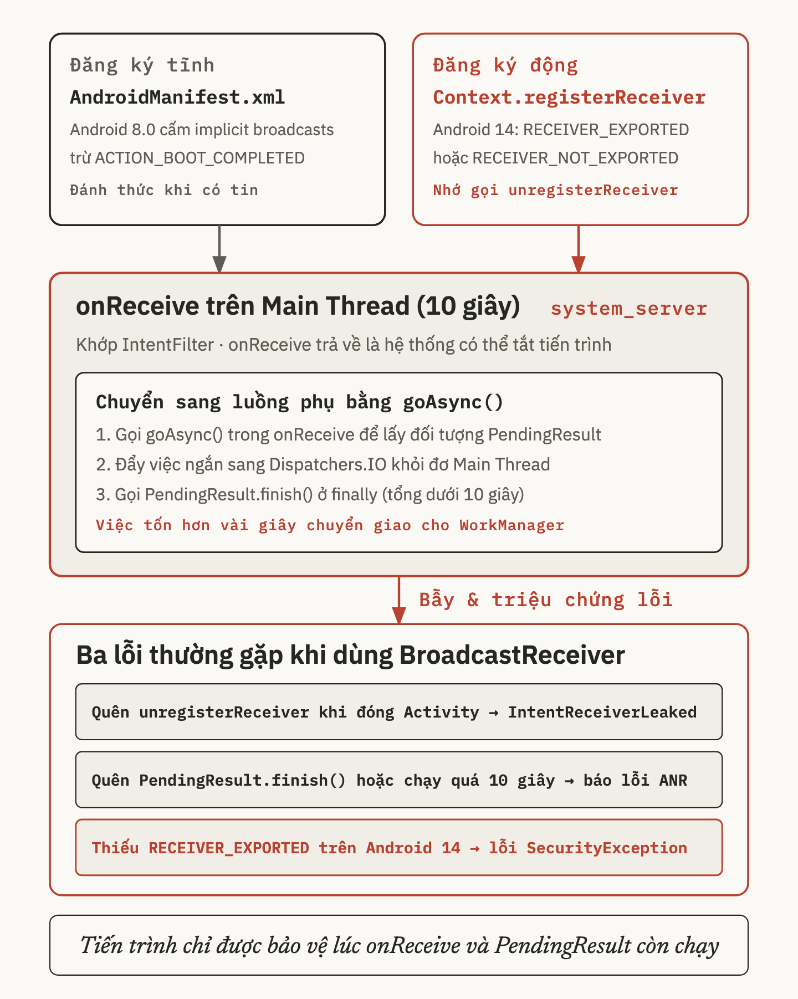

Broadcast receiver
Bản 30 giây
Khi máy sắp hết pin, đổi mạng hay vừa khởi động xong, hệ điều hành sẽ phát một bản tin chung cho các ứng dụng. BroadcastReceiver là trạm gác nhẹ nhất của ứng dụng giúp bạn bắt lấy bản tin đó để kịp phản ứng. Trạm gác này chạy trên luồng chính và chỉ sống vài giây, nên bạn chỉ làm việc ngắn hoặc giao việc dài cho nơi khác.
Cần biết trước
Vấn đề buộc nó ra đời
Khi điện thoại đổi mạng Wi-Fi hay cắm sạc, nhiều ứng dụng cùng cần biết sự kiện này. Chúng dựa vào đó để tạm dừng tải tệp hoặc đồng bộ dữ liệu. Ở bản Android 1.0 (2008), hệ thống cho ứng dụng đăng ký sẵn bộ đón tin trong AndroidManifest.xml để tự thức dậy khi có tin.
Nhưng điều này dẫn tới thảm họa dây chuyền. Mỗi lần người dùng bật tắt mạng, hàng chục ứng dụng đang tắt đồng loạt thức dậy cùng lúc. Máy phải khởi động hàng loạt tiến trình ngầm chỉ để nhận một tin báo, tốn RAM và pin.
Từ Android 8.0 (API 26), Google cấm đăng ký tĩnh trong manifest cho hầu hết các bản tin ngầm (implicit broadcasts). Hệ thống chỉ miễn trừ vài bản tin đặc biệt như ACTION_BOOT_COMPLETED. Sang Android 14 (API 34), ứng dụng đăng ký động để nhận bản tin ngoài hệ thống phải ghi rõ cờ RECEIVER_EXPORTED hoặc RECEIVER_NOT_EXPORTED.
Nó thực sự là cái gì
BroadcastReceiver không phải là một dịch vụ chạy nền liên tục để lắng nghe sự kiện. Thực chất, nó chỉ là một đối tượng ngắn hạn được hệ thống tạo ra để gọi đúng một hàm onReceive trên Main Thread. Vòng đời của nó bị coi là kết thúc ngay khi hàm đó chạy xong. Khi onReceive trả về, hệ điều hành có thể tắt tiến trình bất cứ lúc nào nếu không còn thành phần nào khác đang mở.
Cơ chế

Bạn có thể đăng ký tĩnh trong AndroidManifest.xml cho các tin được miễn trừ, hoặc đăng ký động lúc chạy qua Context.registerReceiver kèm IntentFilter. Khi có bản tin khớp, system_server gửi Intent xuống tiến trình của bạn để gọi onReceive trên Main Thread với hạn 10 giây ở tiền cảnh. Nếu cần đẩy việc sang luồng phụ mà không muốn hệ thống tắt tiến trình ngay, bạn gọi goAsync để lấy đối tượng PendingResult. Khi luồng phụ làm xong, bạn gọi PendingResult.finish() để giải phóng bộ nhận tin, nhưng tổng thời gian vẫn phải dưới hạn 10 giây.
Đánh đổi
Dùng BroadcastReceiver giúp ứng dụng bắt được sự kiện hệ thống mà không phải tự giữ tiến trình chạy ngầm tốn RAM. Đổi lại, chạy lâu trên Main Thread thì dính ANR, còn tự mở luồng phụ không có goAsync thì dễ bị hệ thống cắt ngang. Những việc tốn hơn vài giây bắt buộc phải chuyển giao cho WorkManager.
Nguyên lý gốc
Phát sự kiện một chiều từ nguồn phát tới các đầu nhận đăng ký theo chủ đề (Publish-Subscribe). Thời gian xử lý tại mỗi đầu nhận luôn bị giới hạn cứng.
Key insight
Tiến trình chỉ được bảo vệ lúc
onReceivechạy, nên tự mở luồng phụ mà đểonReceivethoát trước sẽ khiến luồng đó bị giết.
Khuôn mẫu chuẩn
class BootCompletedReceiver : BroadcastReceiver() {
override fun onReceive(context: Context, intent: Intent) {
if (intent.action != Intent.ACTION_BOOT_COMPLETED) return
val pendingResult = goAsync()
CoroutineScope(Dispatchers.IO).launch {
try { scheduleDailySync(context) }
finally { pendingResult.finish() }
}
}
}
Bẫy & ranh giới
Đăng ký động bằng registerReceiver trong Activity mà quên unregisterReceiver khi đóng màn hình sẽ gây rò rỉ bộ nhớ kèm lỗi IntentReceiverLeaked trên logcat. Nếu gọi goAsync mà quên gọi PendingResult.finish() trong khối finally, hoặc xử lý quá 10 giây, hệ thống sẽ báo lỗi ANR. Trên Android 14 trở lên, đăng ký nhận bản tin ngoài hệ thống mà thiếu cờ RECEIVER_EXPORTED hoặc RECEIVER_NOT_EXPORTED sẽ gây lỗi SecurityException. Ngoài ra, phát tin nội bộ bằng sendBroadcast mà không giới hạn gói nhận sẽ làm lộ dữ liệu nhạy cảm cho ứng dụng khác.
Câu hỏi thực chiến
Hỏi: Mở một coroutine chạy việc mất 30 giây bên trong onReceive nhờ hàm goAsync có an toàn không?
Không. Hàm goAsync chỉ giúp chuyển việc từ Main Thread sang luồng phụ khỏi đơ giao diện, chứ không nới rộng hạn 10 giây. Quá 10 giây mà bạn chưa gọi PendingResult.finish(), hệ thống vẫn đánh dấu ứng dụng bị lỗi ANR.
Hỏi: Khai báo nhận sự kiện đổi mạng CONNECTIVITY_ACTION trong file AndroidManifest.xml thì trên máy đời mới có chạy không?
Không. Riêng bản tin đổi mạng này đã bị chặn qua manifest từ Android 7.0 (API 24), trước cả đợt siết chung của Android 8.0. Bạn phải dùng registerReceiver khi ứng dụng đang mở, hoặc đặt điều kiện mạng trong WorkManager.
Hỏi: Khi nào phải truyền RECEIVER_EXPORTED và khi nào truyền RECEIVER_NOT_EXPORTED trên Android 14?
Bạn truyền RECEIVER_NOT_EXPORTED khi chỉ nhận bản tin từ chính ứng dụng của mình, giúp chặn ứng dụng lạ giả mạo bản tin. Ngược lại, khi cần nhận bản tin từ ứng dụng khác ngoài hệ thống, bạn mới truyền RECEIVER_EXPORTED.
Ý bắt buộc khi giải thích lại
- Giải thích được vì sao vòng đời của BroadcastReceiver kết thúc ngay khi onReceive trả về và nguy cơ tiến trình bị tắt nếu mở luồng phụ không qua goAsync.
- Nêu được lý do Android 8.0 cấm đăng ký tĩnh implicit broadcasts trong manifest và cách dùng goAsync kèm PendingResult.finish() dưới ngưỡng 10 giây.
- Chỉ ra được lỗi rò rỉ IntentReceiverLeaked khi quên unregisterReceiver và lỗi SecurityException trên Android 14 khi thiếu cờ RECEIVER_EXPORTED hoặc RECEIVER_NOT_EXPORTED.
- Viết lại được khuôn mẫu chuẩn từ trí nhớ.
Nguồn
- Broadcasts overview — Android Developers
- BroadcastReceiver API reference — Android Developers
- Background Execution Limits in Android 8.0
- Behavior changes: Apps targeting Android 14
- Android 7.0 behavior changes — background optimizations